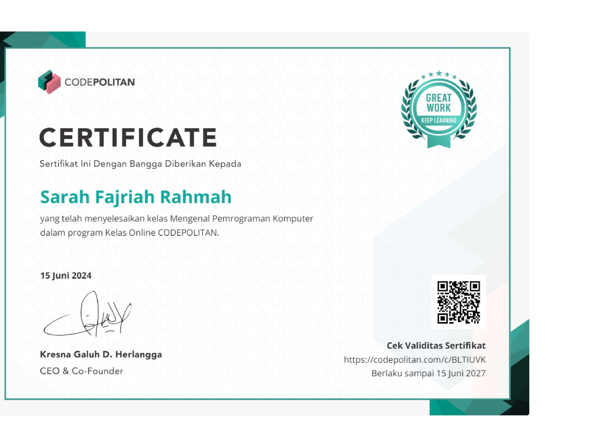
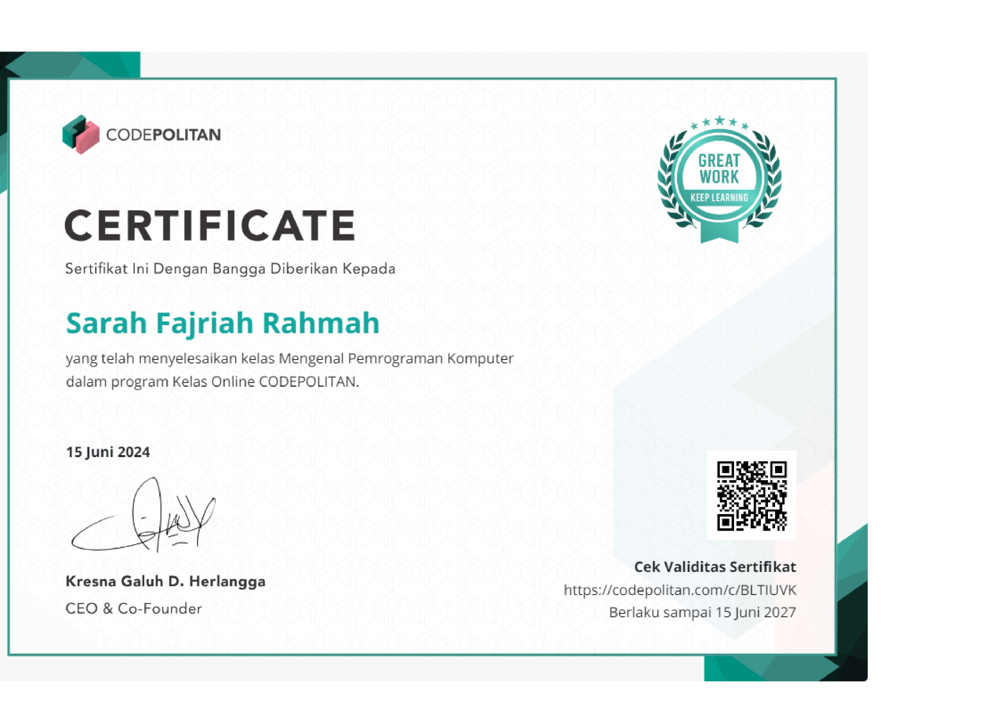
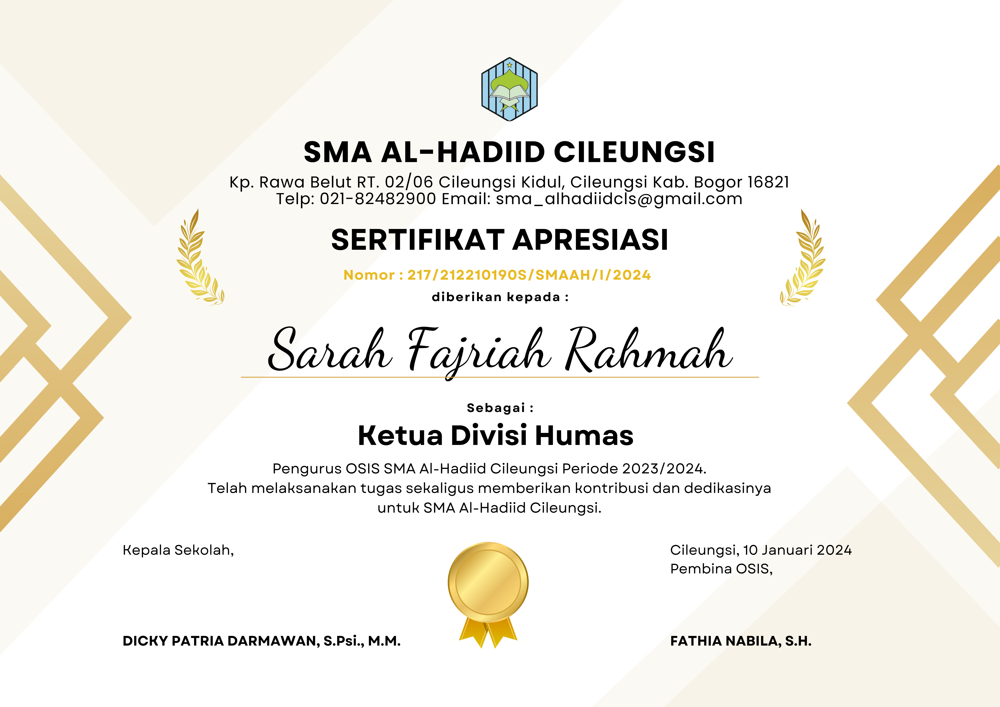
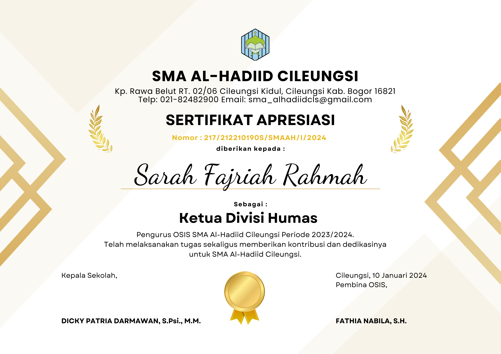

Hello! I'm
Sarah Fajriah Rahmah
An Information Systems
student at UIN Jakarta. I am passionate about technology
because it allows me to explore innovative solutions, deepen my
understanding of the digital world, and contribute to societal
progress.
My experience managing application development projects
further strengthens my desire to pursue a career as a front-end
developer or web designer. Currently, I serve as the website
administrator for the Al-Hadid Foundation, an institution that
manages various educational, religious, and humanitarian units.
In addition, I have completed several courses covering front-end
development, software development, logic programming, data
visualization, various programming languages, and more.
Explore My Work
Modal Title
This is modal content.
Universitas Islam Negeri Syarif Hidayatullah Jakarta
Bachelor of Information System
2024 - Present
- Learned methodologies for software project management and development.
- Developed competencies in designing and developing websites.
- Gained knowledge in designing and managing database systems.
- Acquired skills in various programming languages for software development
Licience and certifications
Design


 

 
